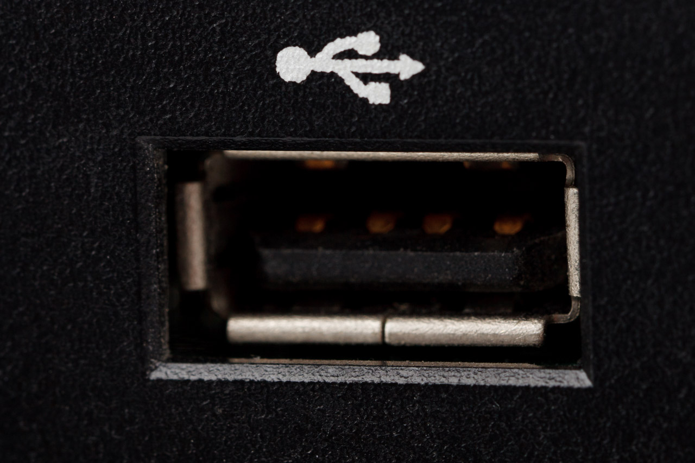

Componentes internos
Los componentes internos son aquellos que se encuentran dentro de la carcasa o caja del ordenador. Según el tipo de ordenador que consideremos unos componentes serán internos o externos. Por ejemplo: en un equipo de sobremesa el teclado será un elemento externo, mientras que en un portátil serán interno, aunque también tendríamos la posibilidad de añadir uno externo.
A lo largo de este documento tendremos como referencia un ordenador de sobremesa, salvo que se indique lo contrario en algún apartado específico.
Placa base
Es una tarjeta electrónica, una placa de circuito impreso, a la que se conectan los distintos componentes tanto internos como externos que componen el ordenador.

Evan-Amos, CC BY-SA 3.0 via Wikimedia Commons
Microprocesador
El microprocesador es el cerebro del ordenador
Frecuencia del microprocesador
La frecuencia de trabajo de un microprocesador se mide en Hz, esto es, operaciones que realiza por segundo. Como un microprocesador realiza miles de millones de operaciones por segundo es necesario utilizar otras unidades como kHz, MHz, GHz. ¿Cuál es la relación entre ellas?
1kHz=1000Hz
1MHz= 1000kHz=1000000Hz
1GHz=1000MHz=1000000kHz=1000000000Hz
Observación
Si tienes dudas en el cambio de unidades, piensa en gramos y kilogramos o en metros y kilómetros. Seguro que así lo verás más claro.
¿Cuántas operaciones por segundo es capaz de realizar un microprocesador cuya frecuencia es 3,2GHz?
Para contestar a la pregunta hemos de realizar la siguiente operación
3,2GHzx1000= 3200MHzx1000=3200000kHzx1000=3200000000 Hz =3,2x10^9Hz.
Pero no todo es la frecuencia en un microprocesador, tenemos que tener en cuenta:
- Número de núcleos del procesador (Dual Core, Quad Core, Octa Core).
- Número de hilos (threads) del procesador.
- Longitud de palabra (32 bist, 64 bits).
Memoria RAM
La memoria RAM es una memoria a corto plazo, volátil (se pierde la información al desconectar la alimentación), de lectura y escritura (se puede escribir datos en ella y se pueden leer). RAM son las iniciales de Random Access Memory. Esto quiere decir que es posible acceder a cualquier posición de la memoria y que siempre va a tardar lo mismo en acceder a cualquier posición de la misma.
Dispositivos de almacenamiento
Pueden utilizar diferentes tecnologías como:
- Tecnología magnética: discos duros mecánicos (HDD)
- Tecnología óptica: CD, DVD
- Tecnología de estado sólido: memorias USB, SSD
Componentes externos
Los componentes externos también llamados periféricos son aquellos que se conectan a la caja del ordenador para ampliar sus funcionalidades, por ejemplo un ratón, un teclado o un monitor entre otros.
Periféricos de entrada
Los periféricos de entrada son aquellos componentes externos que permiten introducir información en el ordenador, por lo tanto los datos entran al ordenador desde el periférico y por eso se llaman de entrada.
Ejemplos de periféricos de entrada:
- Teclado
- Ratón
- Micrófono
- Escáner
Periféricos de salida
Los periféricos de salida son aquellos componentes externos que permiten sacar información del ordenador, los datos por tanto salen del ordenador para que los podamos ver, escuchar... y por eso se llaman de salida.
Ejemplos de periféricos de salida:
- Monitor
- Impresora
- Altavoces
- Auriculares
Periféricos de entrada y salida
Los periféricos de entrada y salida son aquellos que realizan las dos operaciones, permiten introducir datos en el ordenador y sacar información del mismo. Por ejemplo una pizarra digital o una impresora multifunción.

Otras clasificaciones
Se pueden establecer diferentes clasificaciones, en función de el sentido del flujo de datos como se ha visto anteriormente (entrada, salida o entrada/salida). Otra clasificación podría ser según la funcionalidad: almacenamiento, comunicación...
Ejemplos
Son periféricos de entrada...
- [x] Ratón
- [ ] Impresora
- [x] Cámara web
- [x] Joystick
- [x] Lector de código de barras
- [ ] Proyector
Puedes obtener más información en el tema 3 que encontrarás en Aules
Conectores y puertos
Los conectores internos también llamados slots o ranuras permiten ampliar la capacidades del ordenador, por ejemplo añadiendo una tarjeta de vídeo, de audio o de otros tipos para propósitos específicos.
Conectores internos
- PCI
- PCI- Express
- SATA
- IDE
- ATX
Puertos
Los puertos permiten conectar los componentes externos al ordenador. Existen muchos tipos de puertos, unos específicos como el de VGA para conectar un monitor, y otros más genéricos como el USB que permiten conectar desde un ratón o teclado a un disco duro externo o una cámara web.
| Nombre | Imagen | Señal | Periféricos | Características |
|---|---|---|---|---|
| PS/2 |  |
Datos | Ratón o Teclado | Obsoleto, ahora se utiliza USB |
| USB |  | Datos | Ratón, Teclado, Cámara web... | Existen diferentes estándares y tipos de conectores |
| VGA |  |
Vídeo | Monitor | Asociado a monitores CRT, está siendo sustituido por otros como DVI, HDMI |
| DVI |  |
Vídeo analógico o digital | Monitores, | Tiene varias variantes, está siendo sustituido por HDMI |
| HDMI |  |
Audio y vídeo | Vídeoconsolas, televisores, proyectores, monitores | Está sustituyendo a conectores de vídeo anteriores como VGA y DVI |
| RJ45 |  |
Comunicaciones | Cable ethernet del Router, switch | Permite conectar un equipo a una red de comunicaciones |
| Jack (3,5 mm) |  |
Audio | Auriculares, micrófono, altavoces... | Normalmente aparecen varios (de entrada, salida, subwoofers...), cada uno con un color |
| S/PDIF (óptico) | Audio digital | Reproductor de CD profesional, unidad de Minidisc | Existe una versión coaxial y otra óptica | |
| RS232 (Puerto serie) |  |
Datos | Ratón, teclado. Equipos industriales | Obsoleto en los ordenadores[1] |
| DB25 (Puerto paralelo) |  |
Datos | Impresoras | Obsoleto[1] |
| ... | ... | ... | ... | ... |
Puedes completar la tabla con más conectores que conozcas. Investiga en internet o consulta Aules.
Atención
[1] El conector USB ha reemplazado a estos conectores.